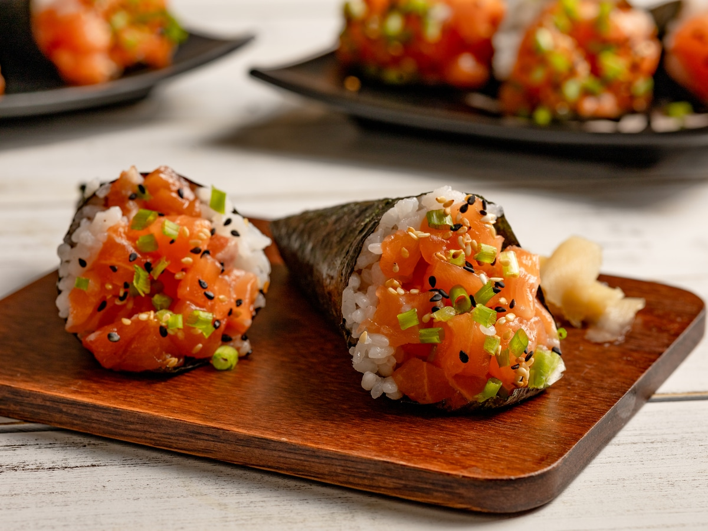

Home
Temaki Recipe

Description
Temaki Sushi (手巻き寿司) is sometimes called a ‘hand roll’ because it consists of a rolled cone of seaweed wrapped around rice and fillings. The best part, for me as a cook, is that this is a meal where everyone helps themselves. You just need to prepare a platter of sushi rice, nori (seaweed sheet), and fillings such as sashimi-grade fish and veggie sticks. Then, at the table, each person makes hand-rolled sushi based on their favorite mix of ingredients.
Ingredients
- Sushi Rice
- NVarious Ingredients for Hand Roll Sushi
- Nori (Seaweed)
Steps
- Cut a square nori sheet in half (restaurant-style) or quarter (more home-style) and place it, shiny side down, on your palm.
- Add a thin layer of sushi rice (about 2 tablespoons) to the left third of the nori sheet (if you‘re right-handed) and flatten/spread it evenly. Place some ingredients on the rice. Here, I put cucumber, takuwan, 1-2 types of sashimi, and radish sprouts.
- Roll the bottom left corner up to the middle of the top edge of the nori to form a triangle, and continue rolling until you form a cone shape.
- Put a piece of rice on the tip of the nori to secure the folds. Enjoy!